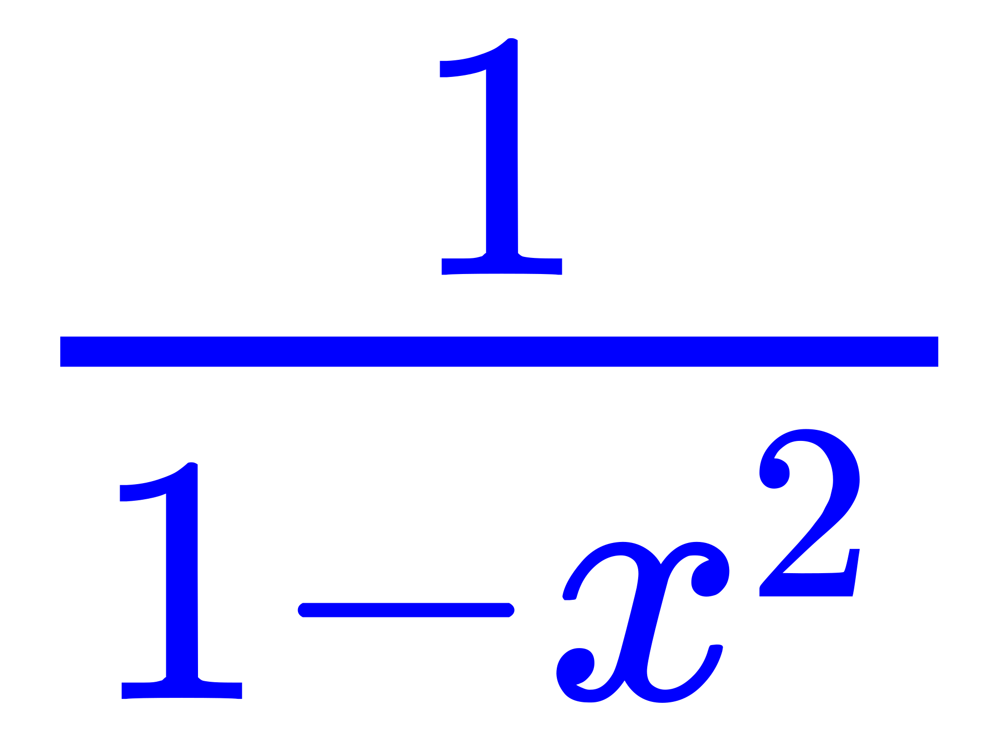
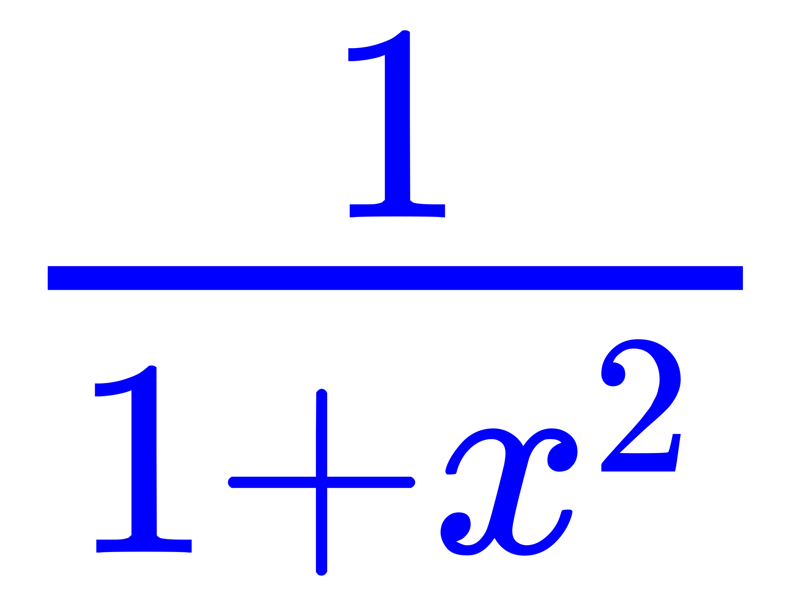

还是先从意识形态说起。昨天早上大约六点，评论了一个「神经科学和二元论」问题下面的回答下面的其它评论，针对「非还原物理主义和自由意志」的观点，也就是「相同唯物主义状态对应不同的唯心主义选择」这种令当代诡辩唯物主义者恼羞成怒气急败坏的情况，进行了粗糙的简略的在钦定学霸看来不值一提的解释。
在「复分析」的常识当中就有「多值函数」存在，初等的「对数函数」在复数域上都充沛着无穷多「可能性」，关乎「路径依赖」事宜。于是数学渣对于这种被钦定学霸垄断的前沿领域之怪现状一点都不奇怪，绝不会皱紧眉头做深思熟虑状表示莫名惊诧，接下来口绽莲花游说鸡鸣狗盗之徒把持的科技部企图诈骗预算，搜刮民脂民膏以供酒池肉林兲下布种。
然后这一天多就热闹了，可见又戳到了豪门贵种走兽派的痛处。前一篇流水帐「政治敏感」的原因很简单，提出了「虚数真的存在么」这个意识形态领域当中尖锐的问题。到了本篇也不用展开解释了，按钦定学霸尤其是理工兲才晒出的学位证书揣测，复分析它们肯定都学过，若是还不能理解，只能证明这是体制的原因，兲朝教育口出了兲大的问题。
这么说吧，按照诡辩唯物主义者吹捧的「掰手指头抠脚趾头路径依赖」总结出自然数的「学术史」，字面意义的「数」的范围逐步扩充，到了复数就到头了，再没有更大的数系了也。而「复数」天生就是二维的存在，相关概念一定要放在平面上理解。在数学相关领域的「圈」内，学会把「二维」作为所有思路的出发点，是区别学霸「钦定」与否的一个标准。
举个例子，学霸们推荐的《可视化复分析》教程当中提到的：在「实分析」当中对于「」和「」进行幂级数展开，收敛区间都是(-1, 1)，这个结论就不能在实平面内理解，只要知道后者在±i的位置没有定义，就可以类比±1对前者的影响。
所以，当诡辩唯物主义者们叫嚣着「物质是第一性的」的时候，它们既不能在「物质」当中找到虚数，又不能否认虚数对「物质」的影响，就只好到处挥舞兲命昭昭的狼牙棒，倚仗鸡鸣狗盗之徒的充沛武德，企图敲碎一切费拉不堪的天灵盖，自诩全无敌。
开场白结束，接着前一篇的话题。那个「内置复数处理指令」的虚拟机的构思也有了点进展。在设定集注释当中提到了，1898年胡尔维茨证明了「有单位元的赋范可除代数」一定与实数R、复数C、四元数H、八元数O同构。所以，内置运算处理指令不仅仅局限于复数，四元数和八元数也要有，虽然对绝大多数用户来说很少用，但是当代制程工艺之下其实也不怎么占地方嘛。
于是，整体的虚拟机准备唤作「胡尔维茨」（Hurwitz Virtual Machine），而这套系统准备唤作「ROCH」，四个字母分别代表四个数域，而相关功能模块可能用「黎曼」之类命名，本来就都是出现在数学课本上的字眼，没有任何政治和意识形态色彩。至于盎格鲁萨克森阵营强调米尔诺在一甲子之后的1958年重新证明了胡尔维茨定理，那可以另搞一套，以竞争促进步嘛。
然后就是险些迷失的细节了，图标设计为「C包着H并且R托着O」的样子，用「Optima Titling」字体示例截图大概是这样的：
因为不懂设计只能截图，找不到「RO」的实例，但是构思中要以上标写成ℝ𝕆的样子，字体用空心大写字母，其它装饰效果用花体或哥特体，都是数学惯例，肯定没版权。但是「ROCH」也是常用词，估计会和「SageMath」先例一样在实际中称为「RochMath」什么的。
其实还有一个候选「CHOR」，也是常用词，但是图标设计暂时没想好，不知道怎样赋予其以深刻的政治和意识形态内涵。左边「CH」不会变，谁要是因此想起拜占庭和后来的绿教那是「思路广欢乐多」，活跃网友应该发动灌水机喷它「何弃疗？建议二院就诊」可也。
我强调过很多次了，自己的意识形态立场是直接从没有任何文化背景的「数学」发展而来，还特意声明与「邵雍那一套」没关系，为了「本土化」才选择了有过相关论述的「胡宏性学」阐述，比如以「心无死生」观点解释「灵魂」的绝对存在和相对活性。若是有伪装成钦定学霸的逗哔看见「胡宏」和「胡尔维茨」就眉开眼笑喜出望外或恼羞成怒气急败坏，那也是「思路广欢乐多」，「建议去二院就诊」。
还想起一件事，既然不能编译TeX原版代码的扩展就不能使用「TeX」字眼，那么构思中的「TeX-Like」公式排版也要换个名字，不如叫「LeTiX」吧，也是「L托着E并且T罩着I」的设计，其中E和I都用「小型大写字母」：LETIX。
今天晚上有位网友评论了我的某个回答，关于「在线学术交流」的内容，说他们正在搞。于是我就应景建议了，说有个Mozilla发起的活跃的开源项目「PDF.js」，用JavaScript在HTML5的Canvas上面渲染PDF，可以实现浏览器内不需要插件而直接使用，选择文本复制等功能都很顺畅。
在TeX处理过程的四个模块当中，第四阶段是生成DVI的，包括「分页」工作在内。这个DVI格式其实比较古老，当代很多TeX发行版都提供了直接输出PDF功能。而PDF格式其实也很古老，前面说过了可以视为PostScript的编译结果，关爱硅基芯片的逆波兰式语法并非碳基生物的好朋友。
想起另外一种与PDF竞争的格式「XPS」，已经演变成「OpenXPS」成为若干互联网组织标准了也，但是还没有替代PDF成为「事实标准」。这个OXPS使用XAML语法，比较接近当代硬件能够处理的对人类而言可读性也比较高的方式。微软的实现采用WPF，既然标准开放其它机构也可以另辟蹊径。
前面也提到了，对于不需要印刷为实体或动态分页的内容，是「流文档」。那么相应的构思逐步清晰了，对于在线交流的应用场景，后台处理完毕有了内容之后「直接画」就是，还不用按照实际纸张大小分页。而攒了几十年之后极大充沛的既存PDF当然可以使用「PDF.js」显示，向后兼容也可以做到。
之所以昨天早上六点还没睡，是因为前一天晚上在知乎刚收藏了一个「纸艺」相关文章之后钦定死机，于是把十一年前买的笔记本翻出来重装作为备用。而原来备用的笔记本，已经被啥「漏洞」远程弄成「FAN error」再也启动不了了。
说过了我这人兴趣广泛，但言行举止吃喝拉撒睡就是被豪门贵种走兽派豢养的奴才刻意歪曲，随时随地向着各路人渣「站队」其实就是抓壮丁。反过来可以问问这帮自诩「立场坚定不动摇」还一边替我站队一边喷我「墙头草随风倒」的「同学」或「亲戚」，是不是以身作则在砥砺奋进五年来坚持每天吃庆丰牌猪肉大葱馅包子、兰州牛肉拉面、长沙油炸臭豆腐……以及其它什么奇葩食物呢？
因为ThinkPad X60还是古老的32位体系，装了Windows 7 Home Basic之后就开始联机更新，一直更新到昨天早上。不过呢，就在我发表那篇复分析相关评论之后，「184个更新当中的第147个」就卡住再也不动了，卡了五个多小时，关机重启之后继续更新才过去。
到了今天早上凌晨四点，终于更新完毕，目前安装的软件及理由如下：
目前就装了这些，作为备用，《设定集》《恶补记》相关码字可能用到的就这些。没装日语输入法，不过系统自带的有，硬盘上也有ATOK2010，用得着的时候再说。必应输入法是系统更新时候自动装上的，还有Skype也是。因为硬件太老，所以同类型软件都找最小的那种。
关于QQ拼音多说几句，以前揣测因为没在注册表里面写入键盘布局是直接读硬件设定，这次重装发现稍有差别。硬件上已经设定为106/109键盘是告知Windows，但是QQ拼音读的不是这个，而是基础键盘布局「简体中文美式键盘」。十年前《关于输入法》随笔中解释过了这个「804」与一堆「扩展键盘布局」之间的关系。
不过呢，既然如此，为啥不多对应几个日语键盘特有的键呢。比方说「英数」，切换中英文除了Shift和Ctrl之外再多一个；再比方说「半角/全角」，使用「Shift+Space」毕竟麻烦，尤其是最近码字换方括号频繁，「」『』【】这些都在同一个键位上；还比方说「ひらがな・カタカナ」用来切换简繁体。
这叫「崇洋媚外」「精日」？我自己设计的键盘布局都有十年了，在知乎贴出来都有几个月了。咱还是举个信息技术圣地美帝灯塔国精英的例子，在那Unix时代，精英们感觉左Ctrl键常用但位置偏僻，就自己修改键盘映射，与CapsLock键互换。这事我在好几本关于老一辈信息技术先驱者和领路人的相关著作当中看到过。那么，除了白皮鬼子之外，东洋黄皮鬼子也觉得CapsLock不常用就挪到上档把下面留给输入法状态切换，而我中华兲朝上国革命战士们就坚持「两个凡是」，「凡是敌人支持的事情我们就反对，凡是敌人反对的事情我们就支持」？
不就是重装了个系统么，网上这么大动静？这不是豪门贵种走兽派24×7盯着我随时抄袭剽窃摘桃子灭口转头扶持钦定主角龙傲天是什么？
虽然我在日本买笔记本的时候ThinkPad已经被联想收购了，但是IBM的商标还在；而我买MOTO手机的时候，MOTO可还没被联想收购呢。至于键盘布局和输入法，那是为了我自己用着方便，软件可以搞定，硬件怎么定制键盘吖，这不单单是键帽的问题，线路板都不一样。
多说几句吧，本来设计的就是「简体中文－国际键盘」，对照「美国英语－国际键盘」，重点是以自己为主兼顾需求。就说货币符号，美式键盘上面连英镑都没有，所以这不是什么狗屁「文化冲突」。我加了一个键「VK_102」上面除了人民币（或以灌水机视角称「日元」）符号就是（作为一个国际组织的）欧元符号，顶多加上通用货币符号「¤」，其它国家或地区都没管。
至于变体拉丁字母，原则是列在字母表里面的才算数。德语「äöüß」就是字母，汉语拼音里面有个「淤」，输入法还不是照样用「v」替代，而「ij」上面本来就有点，谁给抹了让我看看。不在字母表里面的那些叫「附加了注音符号」，café
employée
这种都被省略了。至于选择的语种，就按照战后国际秩序规定的官方语言从英法西里面选，加上德语也没几个，其它拉丁字母就懒得管了。
标点符号也一样，做西幻设定少不了引用原文，为了排版方便，才有「英式和法式单双引号」「分节号」「段落号」……其它包括但不限于「±×÷°¶§‰…」……不会把所有东西都塞进来。之前说过了，因为「西方」没有书名号，所以采用法式双引号代替，若有外交口逗哔奴才为了主子的利益而跳将出来指责「有悖于西方国家法律规定的正字法和拼写规范」关我屁事？！